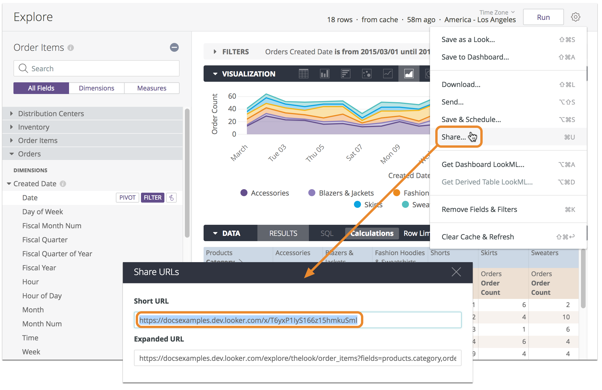
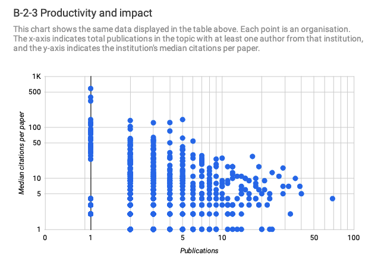
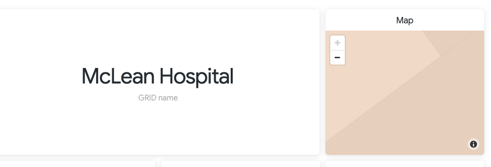
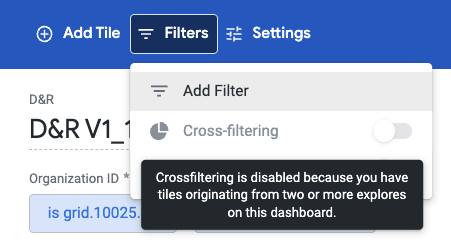

Three things I do *not* like about Looker
Following up on my previous 3 things I like about Looker , here are instead the top three things that I really wish were different about this piece of software.
Looker is a business intelligence software and big data analytics platform that helps you explore, analyze and share real-time business analytics easily. Looker is part of the Google Cloud platform.
1. Can't make public dashboards
I totally wish I was able to create a dashboard and make it available on the web without the need for users to log in. Instead:
To view the dashboard, anyone with the link must have access to the Looker instance on which the dashboard is saved, as well as access to the dashboard and models that the tiles are based on.
Dashboard sharing was so easy with Data Studio that I suppose I got spoiled by that. I'd be happy enough if Looker could provide a 'public sharing' option for dashboards with reduced features or something like that, e.g. inferior data refresh rate, max number of tiles allowed, or limited query complexity.
In all fairness, Looker permits to share publicly a single visualization (aka a 'look'). Not the same thing, but still, that can be handy e.g. in order to include little information snippets on a blog or site.

2. Built-in visualizations can be sloppy
Even taking into account that visualizations are clearly not Looker's main selling point (VS the powerful modeling layer, for example), some of the built-in visualizations can be rather low-quality. Which I found rather surprising, considering the overall sophistication of the overall UI/UX of Looker.
Example: the built-in scatter plot works fine, as long as you plot two dimensions (e.g. article type VS article country), or a dimension and a measure (article country VS article citations). However, what if you want to plot two measures against each other (article count VS article citations)?
This is handy because by having two measures on the chart axes, the dots could be mapped to a dimension of choice (eg country, or organization). As a result, one can quickly compare how that dimension performs against the two measures. That is, how different organizations compare with each other, in terms of articles counts and articles citations.

In Data Studio I was able to do that easily (see above). The result being a handy visualization displaying the single records that lie at the intersection of such measures. But in Looker two measures can be plotted only by 'hiding' the dimension. So the dots in the chart are not representing the dimension, simply the correlation between two numerical measures.
Another example: the map visualization. It generally works ok but if you happen to be plotting a single point (eg a city), the zoom is automatically set at such a high resolution that the map view becomes unusable.
Why isn't there there's no way to specify the default zoom level with a single point? Such an obvious feature, it makes you wonder how they could have forgotten about it.
NOTE: there is a Map Visualisation options - Map - Map Position (Custom) - Zoom Level option, but that requires static lat/long coordinates to be added to the settings, rather than being retrieved dynamically from the data being plotted.

3. Cross-filtering dashboards is limited
You can set standard dashboard filters and specify exactly which tiles should be effected by these filters. That's pretty cool.
The problem arises when cross-filtering is turned on.
With cross-filtering, users can click a data point in one dashboard tile to have all dashboard tiles automatically filter on that value.
With cross-filtering, it's an all-or-nothing matter: you either filter all the tiles or none. Which I found out to be a game stopper as soon as you have a handful of data-hungry tiles on your page. These tiles will slow everything down and there is no way to selectively disactivate cross-filtering on them. So you end up removing cross-filtering altogether.
Similarly, if your dashboard uses data from multiple explores (i.e. data sources), then cross-filtering is a no-go by default.

This is another little thing that was easy to master in Data Studio, but impossible to do in Looker: in Data Studio you can group charts so that cross-filters will trigger only those within the same group.
Find out more about Looker
Start by checking out the Looker user guide.
YouTube has many videos that show Looker in action.
Updates
- 2022-07-29: updated the scatter plot and map issues description based on feedback.